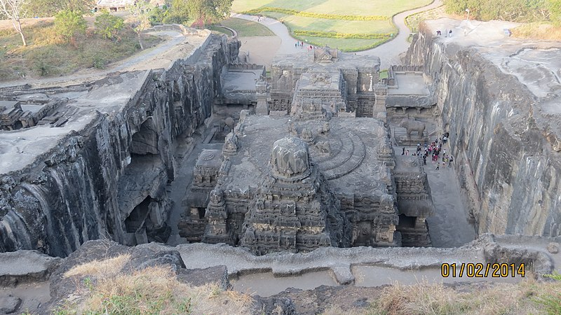

The First Temple Constructed from Single Rock - Kailasa Temple, Ellora

The Kailasha (IAST: Kailāśa) or Kailashanatha (IAST: Kailāśanātha) temple is the largest of the rock-cut Hindu
temples at the Ellora Caves, Aurangabad District, Maharashtra, India. A megalith carved from a rock cliff face, it
is considered one of the most remarkable cave temples in the world because of its size, architecture and sculptural
treatment,[1] and "the climax of the rock-cut phase of Indian architecture".[2] The top of the superstructure over
the sanctuary is 32.6 metres (107 ft) above the level of the court below,[3] although the rock face slopes downwards
from the rear of the temple to the front. Archaeologists believe it is made from a single rock.[4]
The Kailasa temple (Cave 16) is the largest of the 34 Buddhist, Jain and Hindu cave temples and monasteries known
collectively as the Ellora Caves, ranging for over two kilometres (1.2 mi) along the sloping basalt cliff at the
site.[5] Most of the excavation of the temple is generally attributed to the eighth century Rashtrakuta king Krishna
I (r. c. 756 – 773), with some elements completed later. The temple architecture shows traces of Pallava and
Chalukya styles. The temple contains a number of relief and free-standing sculptures on a grand scale equal to the
architecture, though only traces remain of the paintings which originally decorated it.[6]
History
Kailasa temple lacks a dedicatory inscription, but there is no doubt that it was commissioned by a Rashtrakuta
ruler.[7] Its construction is generally attributed to the Rashtrakuta king Krishna I (r. 756-773 CE), based on two
epigraphs that link the temple to "Krishnaraja" (IAST Kṛṣṇarāja):[7][8]
- The Vadodara copper-plate inscription (c. 812-813 CE) of Karkaraja II (a ruler of a Rashtrakuta branch of
Gujarat) records the grant of a village in present-day Gujarat. It mentions Krishnaraja as the patron of
Kailasanatha, and also mentions a Shiva temple at Elapura (Ellora). It states that the king constructed a
temple so wondrous that even the gods and the architect were astonished.[8] Most scholars believe that this
is a reference to the Kailasa Shiva temple at Elora.[9]
- The Kadaba grant of Govinda Prabhutavarsha similarly appears to credit Krishnaraja with the construction of
the temple.[7]
However, the attribution of the temple to Krishna I is not completely certain because these epigraphs are not
physically connected to the caves, and do not date Krishnaraja's reign.[8] Moreover, the land grants issued by
Krishna's successors do not contain any references to the Kailasa temple .[9]
The Kailasa temple features the use of multiple distinct architectural and sculptural styles. This, combined with
its relatively large size, has led some scholars to believe that its construction spanned the reigns of multiple
kings.[10][11] Some of the temple reliefs feature the same style as the one used in the Dashavatara cave (Cave 15),
which is located next to the temple. The Dashavatara cave contains an inscription of Krishna's predecessor and
nephew Dantidurga (c. 735–756 CE).[12] Based on this, art historian Hermann Goetz (1952) theorized that the
construction of the Kailasa temple began during the reign of Dantidurga. Krishna consecrated its first complete
version, which was much smaller than the present-day temple.[13] According to Goetz, Dantidurga's role in the temple
construction must have been deliberately suppressed, as Krishna sidelined Dantidurga's sons to claim the throne
after his death.[14] Based on analysis of the different styles, Goetz further hypothesized that the later
Rashtrakuta rulers also extended the temple. These rulers include Dhruva Dharavarsha, Govinda III, Amoghavarsha, and
Krishna III. According to Goetz, the 11th century Paramara ruler Bhoja commissioned the elephant-lion frieze on the
lower plinth during his invasion of Deccan, and added a new layer of paintings. Finally, Ahilyabai Holkar
commissioned the last layer of paintings in the temple.[15]
M. K. Dhavalikar (1982) analyzed the architecture of the temple, and concluded that the major part of the temple was
completed during the reign of Krishna I, although he agreed with Goetz that some other parts of the temple complex
can be dated to the later rulers. According to Dhavalikar, the following components were completed by Krishna: the
main shrine, its gateway, the nandi-mandapa, the lower-storey, the elephant-lion frieze, the court elephants and the
victory pillars.[16] Dhavalikar admits that the most important sculpture of the temple, which depicts Ravana shaking
the Kailasa mountain, appears to have been built after the main edifice. This sculpture is considered one of the
finest pieces of Indian art, and it is possible that the temple came to be known as Kailasa after it. Dhavalikar
theorizes that this sculpture was carved around 3-4 decades after the completion of the main shrine, on the basis of
its similarity to the tandava sculpture in the Lankeshvar cave.[17] H. Goetz dated this relief to the reign of
Krishna III.[15] Like Goetz, Dhavalikar attributes some other structures in the temple complex to the later rulers.
These include the Lankeshvar cave and the shrine of the river goddesses (possibly constructed during the reign of
Govinda III).[18] Dhavalikar further theorizes that the excavation of the Dashavatara cave, which began during the
reign of Dantidurga, was completed during the reign of Krishna I. This explains the similarities between the
sculptures in the two caves.[19]
Pallava-Chalukya influence
Dhavalikar pointed out that no major part of the monolithic temple appears to have been an afterthought:
architectural evidence suggests that the entire temple was planned at the beginning.[20] The main shrine is very
similar to (although much larger than) the Virupaksha Temple at Pattadakal, which itself is a replica of the Kailasa
temple at Kanchi.[11] The Pattadakal Virupaksha Temple was commissioned by the Chalukyas of Badami to commemorate
their victory over the Pallavas, who had constructed the Kailasa temple at Kanchi. According to the Virupaksha
temple inscriptions, the Chalukyas brought the Pallava artists to Pattadakal after defeating the Pallavas.
Dhavalikar theorizes that after defeating the Chalukyas, Krishna must have been impressed by the Virupaksha Temple
located in their territory. As a result, he brought the sculptors and architects of the Virupaksha Temple (including
some Pallava artists) to his own territory, and engaged them in the construction of the Kailasa temple at
Ellora.[21]
If one assumes that the architects of the Virupaksha temple helped construct the Kailasa temple at Ellora, the
construction of a massive temple during the reign of a single monarch does not seem impossible. The architects
already had a blueprint and a prototype, which must have significantly reduced the effort involved in constructing a
new temple. Moreover, quarrying a monolithic temple would have actually involved less effort than transporting large
stones to build a new temple of similar size. Assuming that one person can cut around 4 cubic feet of rock every
day, Dhavalikar estimated that 250 labourers would have managed to construct the Kailasa temple at Ellora within 5.5
years.[20] The presence of non-Rashtrakuta styles in the temple can be attributed to the involvement of Chalukya and
Pallava artists.[22]
Construction method

The Kailasa Temple is notable for its vertical excavation—carvers started at the top of the original rock and
excavated downward. The traditional methods were rigidly followed by the master architect which could not have been
achieved by excavating from the front.[23]
A medieval Marathi legend appears to refer to the construction of the Kailasa temple. The earliest extant text to
mention this legend is Katha-Kalapataru by Krishna Yajnavalki (c. 1470-1535 CE).[24] According to this legend, the
local king suffered from a severe disease. His queen prayed to the god Ghrishneshwar (Shiva) at Elapura to cure her
husband. She vowed to construct a temple if her wish was granted, and promised to observe a fast until she could see
the shikhara (top) of this temple. After the king was cured, she requested him to build a temple immediately, but
multiple architects declared that it would take months to build a temple complete with a shikhara. One architect
named Kokasa assured the king that the queen would be able to see the shikhara of a temple within a week's time. He
started building the temple from the top, by carving a rock. He was able to finish the shikhara within a week's
time, enabling the queen to give up her fast. The temple was named Manikeshwar after the queen. M. K. Dhavalikar
theorises that Kokasa was indeed the chief architect of the Kailasa temple, which may have been originally known as
Manikeshwar. Multiple 11th-13th century inscriptions from central India mention architects born in the illustrious
family of Kokasa.[25]
Architecture
The Kailasa temple architecture is different from the earlier style prevalent in the Deccan region. As stated
above, it appears to be based on the Virupaksha Temple at Pattadakal and the Kailasa temple at Kanchi, but it is not
an exact imitation of these two temples.[26] The southern influence on the temple architecture can be attributed to
the involvement of Chalukya and Pallava artists in its construction.[27] The indigenous Deccan artisans appear to
have played a subordinate role in the temple's construction.[28]
The entrance to the temple courtyard features a low gopuram.[1] Most of the deities at the left of the entrance are
Shaivaite (affiliated with Shiva) while on the right hand side the deities are Vaishnavaites (affiliated with
Vishnu). A two-storeyed gateway opens to reveal a U-shaped courtyard. The dimensions of the courtyard are 82 m x 46
m at the base.[1] The courtyard is edged by a columned arcade three stories high. The arcades are punctuated by huge
sculpted panels, and alcoves containing enormous sculptures of a variety of deities. Originally flying bridges of
stone connected these galleries to central temple structures, but these have fallen. Some of the most famous
sculptures are Shiva the ascetic, Shiva the dancer, Shiva being warned by Parvati about the demon Ravana, and river
goddess.[29]
Within the courtyard, there is a central shrine dedicated to Shiva, and an image of his mount Nandi (the sacred
bull). The central shrine housing the lingam features a flat-roofed mandapa supported by 16 pillars, and a Dravidian
shikhara.[1] The shrine – complete with pillars, windows, inner and outer rooms, gathering halls, and an enormous
stone lingam at its heart – is carved with niches, plasters, windows as well as images of deities, mithunas (erotic
male and female figures) and other figures. As is traditional in Shiva temples, Nandi sits on a porch in front of
the central temple. The Nandi mandapa and main Shiva temple are each about 7 metres high, and built on two storeys.
The lower stories of the Nandi Mandapa are both solid structures, decorated with elaborate illustrative carvings.
The base of the temple has been carved to suggest that elephants are holding the structure aloft. A rock bridge
connects the Nandi Mandapa to the porch of the temple. The base of the temple hall features scenes from Mahabharata
and Ramayana.[30]There are five detached shrines in the temple premises; three of these are dedicated to the river
goddesses: Ganga, Yamuna and Saraswati.[1]
There are two Dwajasthambams (pillars with flagstaff) in the courtyard. A notable sculpture is that of the Ravana
attempting to lift Mount Kailasa.[1]